<thead class="p-2 ploughs">
  <tr class="headers">
    <th class="text-capitalize">
      <p>
        {{ 'series' | translate }} <span class="text-uppercase">{{ set | translate }}</span>
      </p>
    </th>
    <th  >
      
      
    </th>
    <th (click)="reqHpTooltip.toggle()">
      
    </th>
    <th (click)="dimensions.toggle()">
      
    </th>
    <th class="scale-up" (click)="distanceBB.toggle()">
      
    </th>
    <th class="scale-up" (click)="bwWidth.toggle()">
      
    </th>
    <th *ngIf="set === 'ppr' || set === 'pnr'" class="scale-up" (click)="clearance.toggle()">
      
    </th>
    <th *ngIf="set === 'pnro' || set === 'pprо' || set === 'pro'" class="scale-up" (click)="clearance.toggle()">
      
    </th>
    <th class="scale-down" (click)="workingDepth.toggle()">
      
    </th>
    <th (click)="transSpeed.toggle()">
      
    </th>
    <th (click)="opSpeed.toggle()">
      
    </th>
    <th (click)="prod.toggle()">
      
    </th>
    <th (click)="weight.toggle()">
      
    </th>
    <th *ngIf="admin">
      <i class="fa fa-camera fa-3x" aria-hidden="true"></i>
    </th>
  </tr>
</thead>
